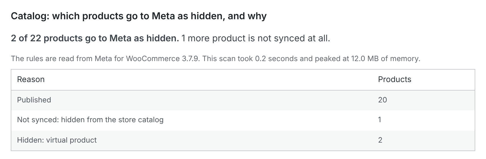
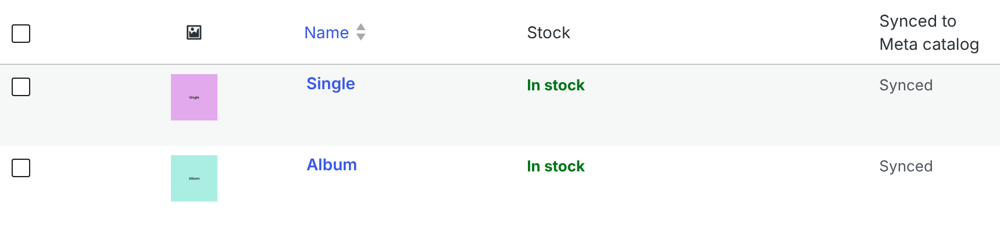
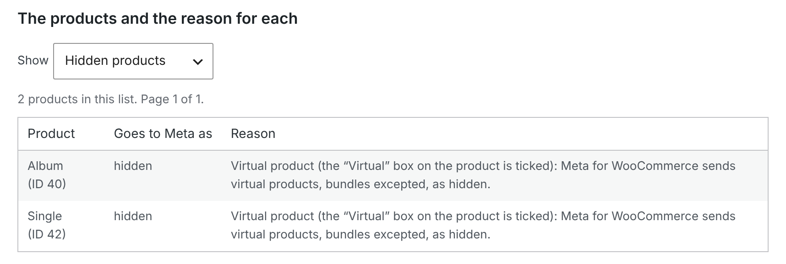
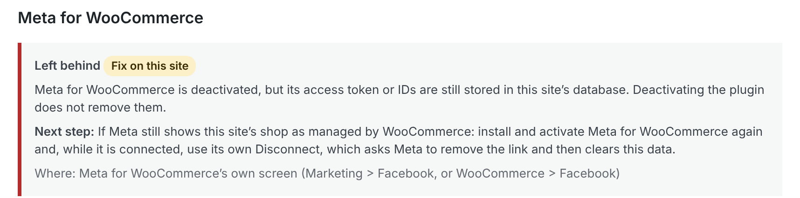
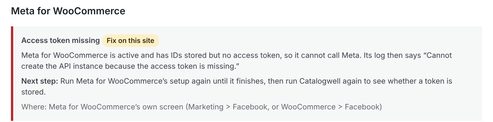
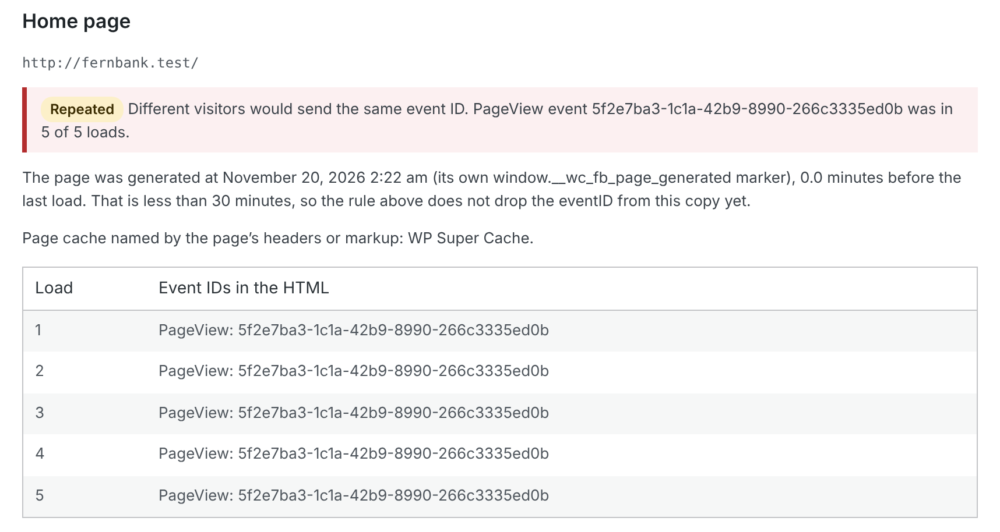

Catalogwell for WooCommerce
Products hidden in Meta Commerce Manager? Access token missing? See what Meta for WooCommerce hides, and why, and what it has stored.

- “Many products in my catalog are marked as hidden”: see which, and why.
- “The access token is missing”: see what the plugin has stored.
- “Identical event IDs” for different visitors: does your page cache do it?
Pro: $19 once, unlimited sites, no renewal. The free plugin runs all four checks.
Version 1.0.1 · tested on WordPress 7.1.5 and 6.5.5, PHP 8.3.6 and 7.4.33 · rules read from Meta for WooCommerce 3.7.9 · source code included (GPL-2.0-or-later) · support@ochrestack.com
Quoted words: topics on the Meta for WooCommerce support forum. Picture: WooCommerce’s own sample store, default settings. How the images were made.
- Meta for WooCommerce’s own “Synced to Meta catalog” column already shows whether a product syncs; Catalogwell adds which synced products go as hidden, and why.
- Google for WooCommerce’s own Product Feed page already lists each product’s status; Catalogwell adds only a summary.
- Developer tools and Meta’s Test Events show one visit at a time; Catalogwell compares five.
- Some faults are on Meta’s or Google’s side; Catalogwell labels them and says where they are fixed. It cannot see or change either account, and changes none of your products, orders or settings.
Which products go to Meta as hidden
Meta for WooCommerce’s own Products list says “Synced” for Album and Single. Its own catalog file sends both as hidden, because the Virtual box on each is ticked.


What Meta for WooCommerce has stored
Whether a token is stored (never shown), the IDs, and the “access token is missing” lines in the plugin’s log.


Does your page cache repeat event IDs?
Catalogwell loads a page five times as separate visitors. Behind a page cache the five can share one event ID.

Catalogwell Pro: the same checks every day
- Runs the checks once a day (WordPress’s own scheduler, so when the site gets a visit) and e-mails the admin address when something changed.
- Keeps the last 30 checks with what changed; downloads the product list as a CSV.

$19 once, unlimited sites, every future Pro update, no renewal · needs the free plugin first (the download holds both) · a new version is a new file on your Polar download page, no new purchase · 14-day refund if it doesn’t work as described and we cannot fix it
Details
- Quick start: what each part shows, limits, privacy.
- Free plugin: catalogwell.zip 1.0.1, source code included, GPL-2.0-or-later. It is not in the WordPress.org directory yet; install it from this zip.
- Needs WordPress 6.5 and PHP 7.4 or later (tested with WooCommerce 11.3.1 and 9.0.2). Rules read from Meta for WooCommerce 3.7.9 and Google for WooCommerce 3.10.1. Install the free plugin first: Pro uploaded alone ends on a WordPress error page and activates nothing.
- Neither plugin sends anything to Ochrestack or any outside service; another plugin that records visits on the server may count Catalogwell’s page loads.
- Run on Linux web servers and in Chromium. Not run: web servers on Windows or macOS, other browsers, WPML (Polylang was), and a real Meta or Google account. If it doesn’t work for you and we cannot fix it, the 14-day refund applies.
- Checkout by Polar. Not affiliated with or endorsed by Meta, Google or WooCommerce. Support: support@ochrestack.com.
How we tested (version 1.0.1)
- 198 automated tests (11,840 assertions, 1 skipped) on PHP 8.3.6 and 7.4.33, WordPress 7.1.5 and 6.5.5; real WP Super Cache 3.1.5 and W3 Total Cache 2.11.0.
- The hidden list equals Meta for WooCommerce’s own catalog file: 22 rows, 2 hidden, 0 differences on the sample store, and 0 on real Polylang 3.9.2 stores. 10,000 products took 9.9 seconds (PHP 8.3.6, WordPress 7.1.5).
How the images were made
Chromium 153 captures of version 1.0.1 on WordPress 7.1.5 (PHP’s built-in web server, SQLite Database Integration 3.1.3), WooCommerce 11.3.1 with its own sample_products.csv imported unchanged, Meta for WooCommerce 3.7.9. The IDs are the demo store’s, the product photos are plain stand-ins, the test site’s mail goes to a file, and the Products list shows only its Name, Stock and Synced columns (Screen Options).